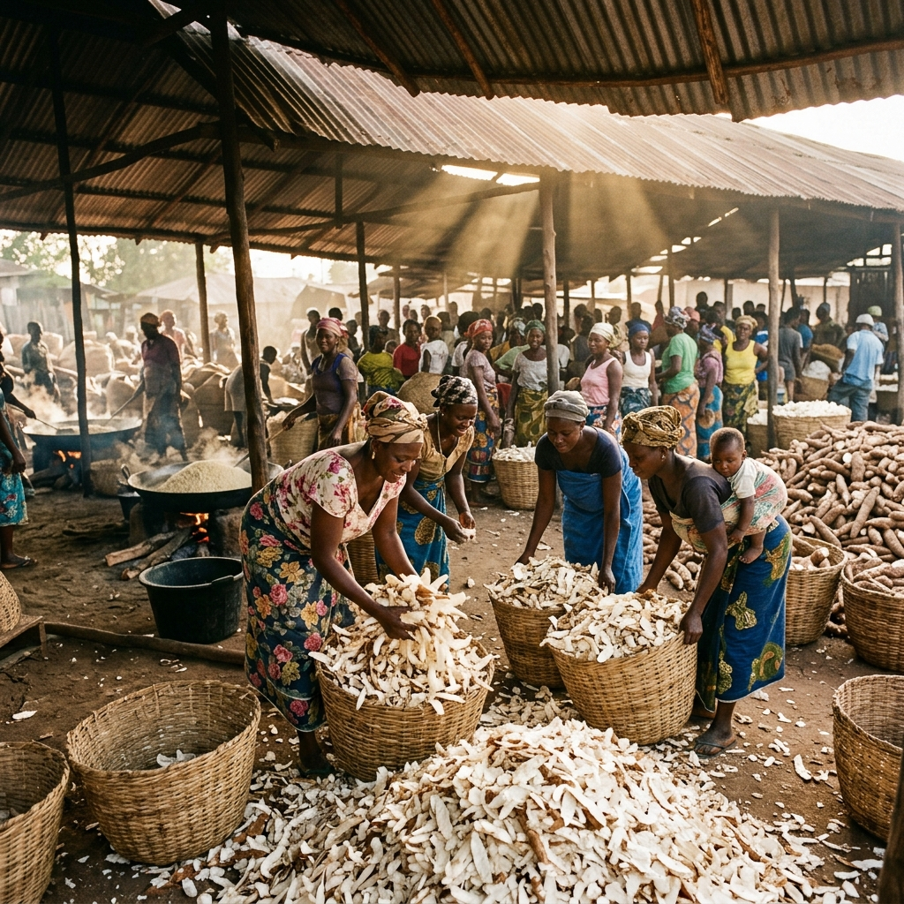
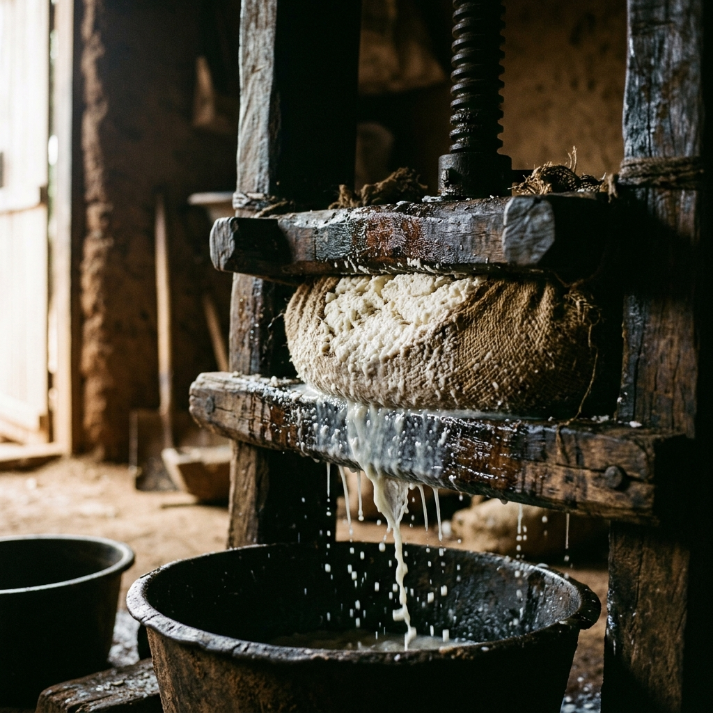
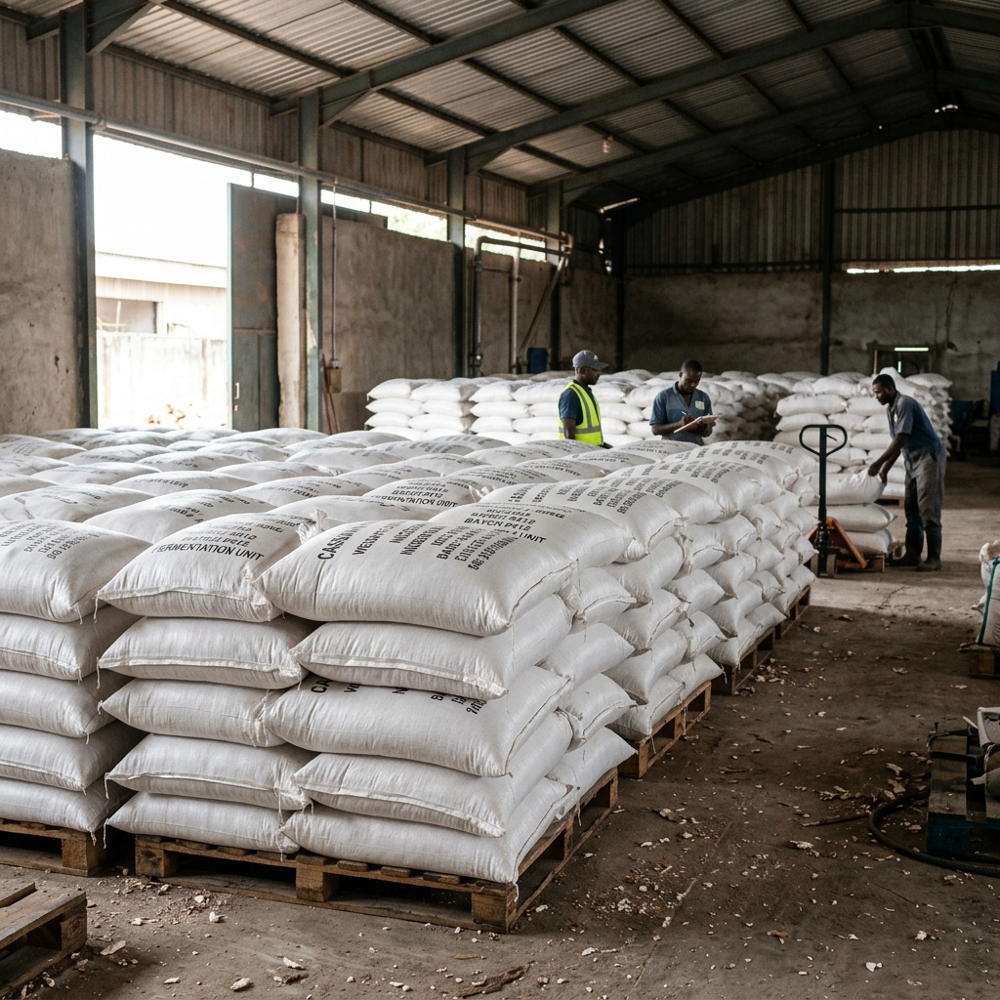
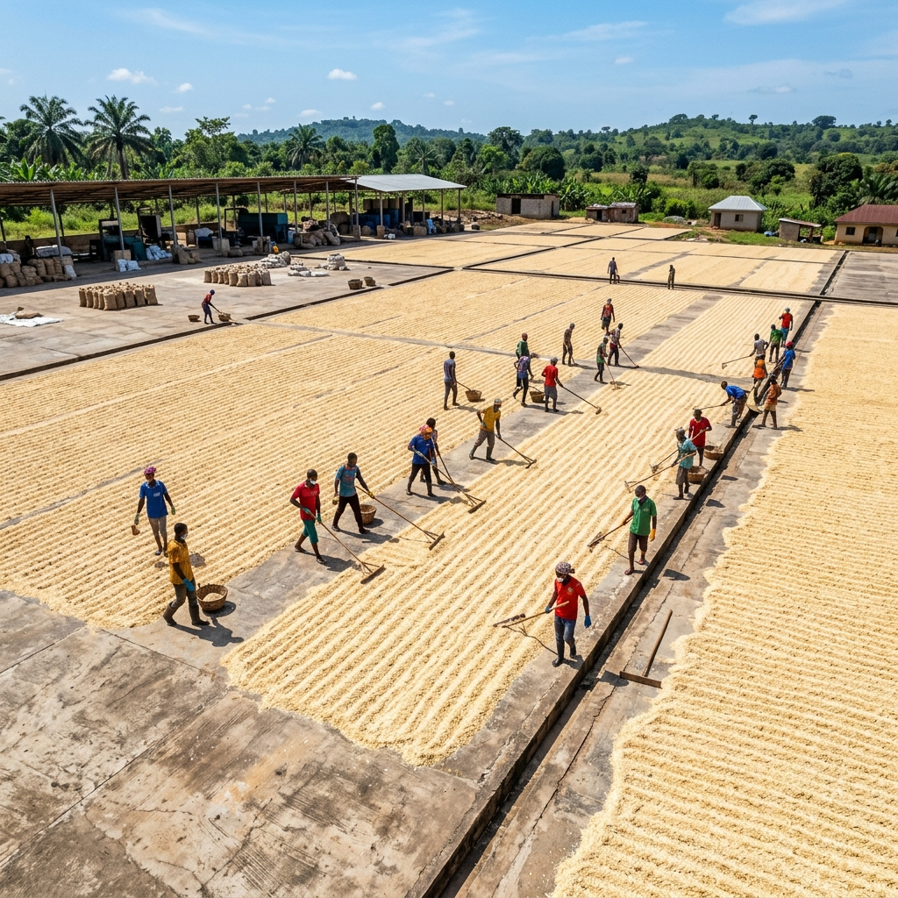
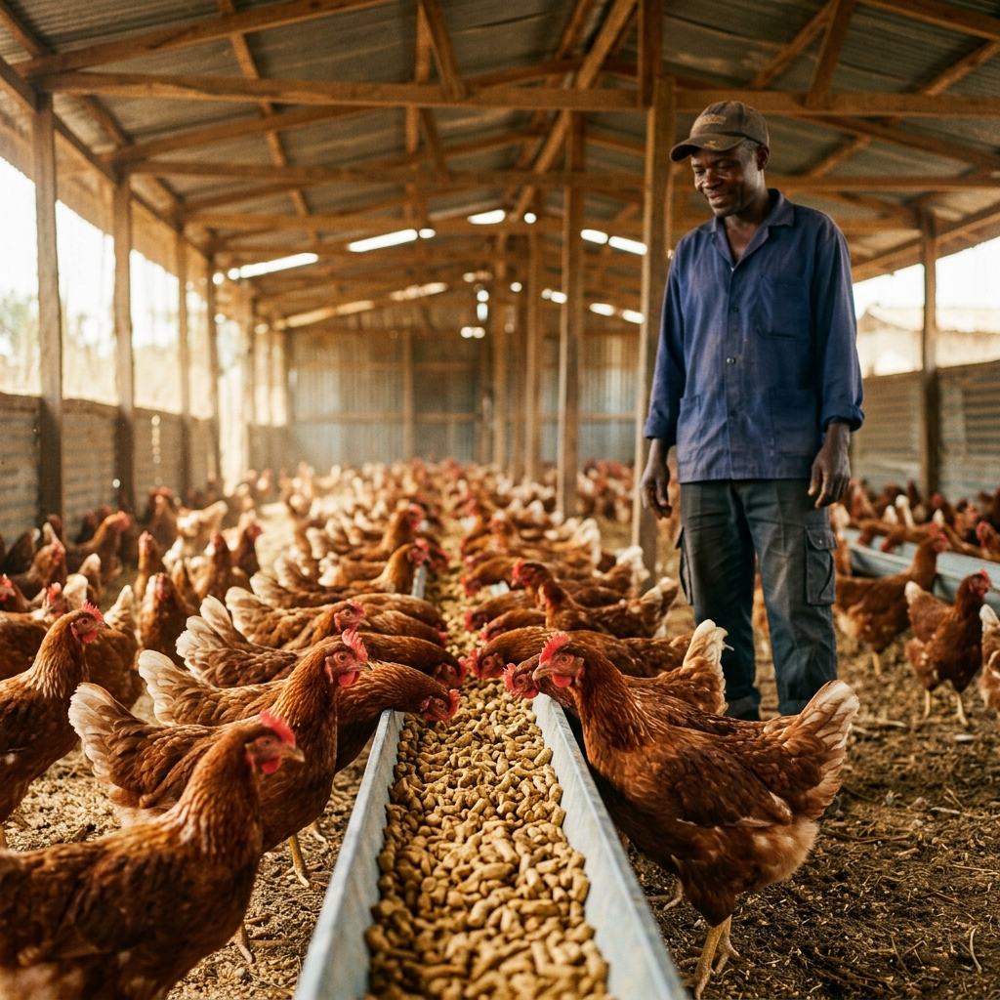
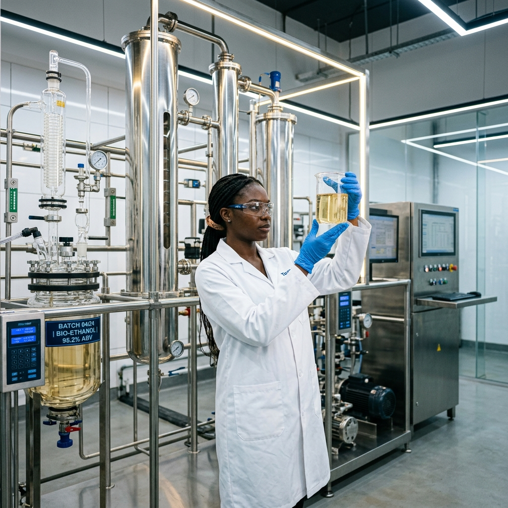
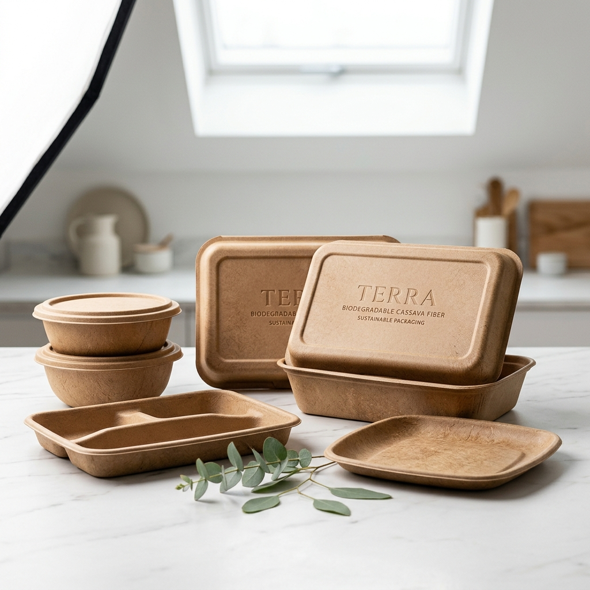
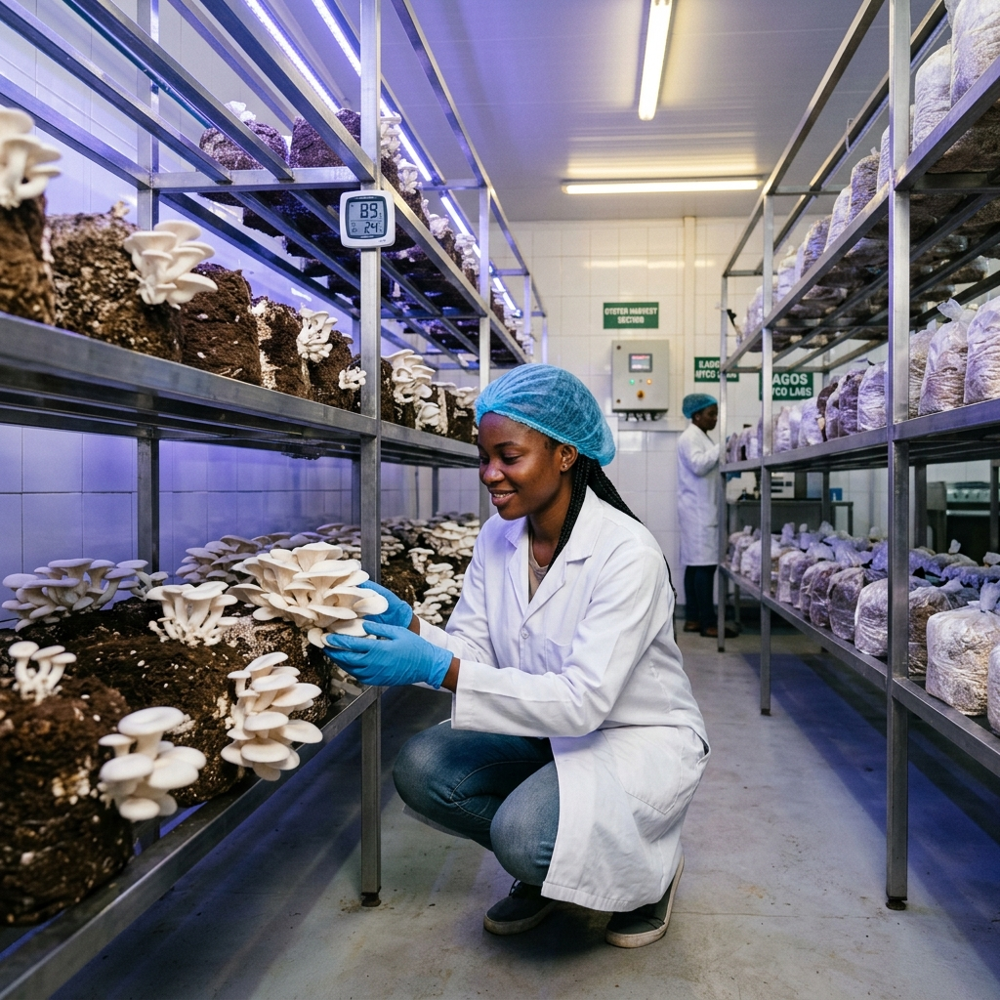
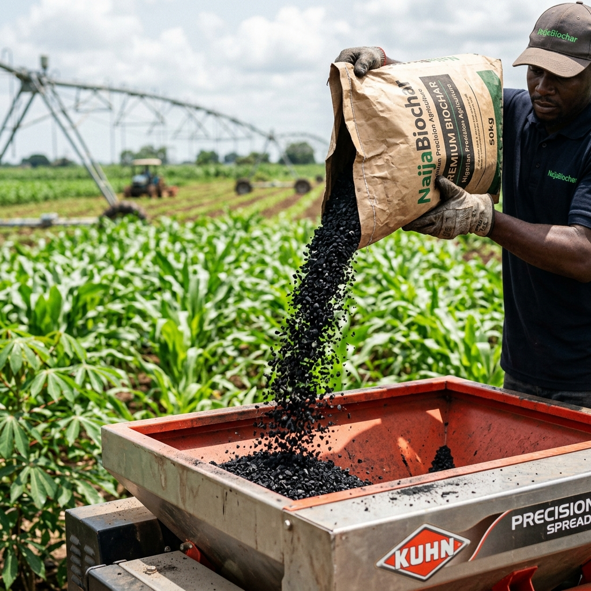
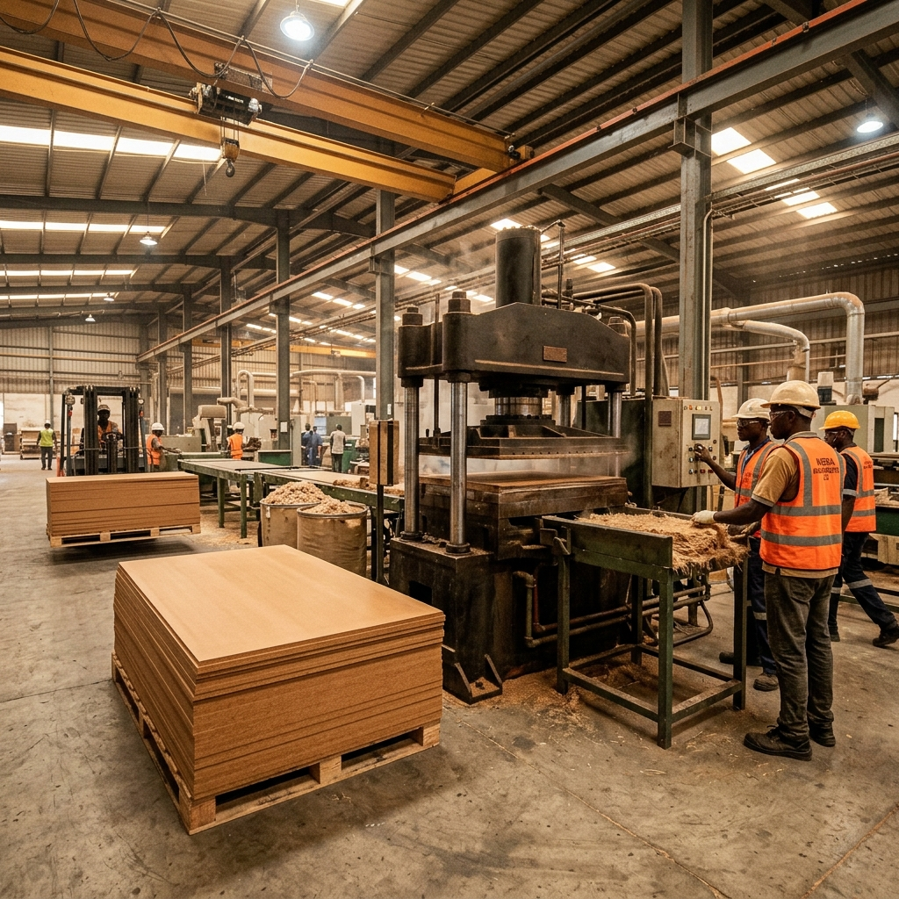

Toxic Waste → Urban Resource
14,000,000 tons of lethal cassava peel waste neutralized. A structural intervention mapping the industrial shift in Nigeria.
Decomposing peels release hydrocyanic acid, effectively sterilizing the soil and toxifying local water tables.
Fermenting in the open air, wet peels off-gas methane—an invisible greenhouse agent 28x more potent than carbon dioxide.
This is not refuse. It is a carbohydrate-dense raw material awaiting industrial extraction.

Gather wet peels directly from local Garri processing hubs before fermentation begins.

Grate the peels and press immediately to drain the toxic cyanide juice (hydrocyanic acid).

Ferment the pressed mash in sealed bags to neutralize any remaining toxins safely.

Sun-dry the mash into High-Quality Cassava Peel (HQCP) ready for industrial use.
The resources extracted from cassava waste fuel multiple industries.

Cheaper, healthier poultry and livestock feed replacing expensive maize. Feed costs cut by up to 40%.

Clean cooking fuel replacing deforestation-causing firewood. Burns cleaner and grows back.

Biodegradable packaging replacing toxic Styrofoam. Decomposes in weeks, not centuries.

High-yield edible fungi on sterilized cassava waste blocks. Creating food from waste.

Carbonized cassava peel enriching depleted farmland. Locks carbon into soil for centuries.

Compressed cassava peel fiber panels. Lightweight, termite-resistant affordable building materials.
Your waste is an asset. Connect with processing hubs across Nigeria's cassava belt to begin the cycle.
18 Hubs Across Nigeria